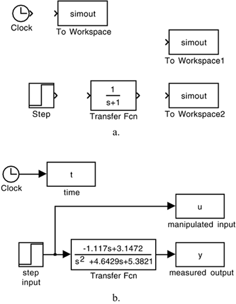

| [ Team LiB ] |
|
M2.2 Open-Loop SimulationsYou now have enough information to generate an open-loop simulation. The Clock,simout,step, and Transfer Fcn blocks can be dragged to a model (.mdl) workspace, as shown in Figure M2-5a. Renaming the blocks and variables, and connecting the blocks, results in the model shown in Figure M2-5b. The transfer function studied is the Van de Vusse reactor (see Module 5). Figure M2-5. Development of an open-loop simulation. (a) Placement of function blocks. (b) Renaming and connection of blocks. The s-polynomials in the process transfer function were entered by double clicking on the transfer function icon and entering the coefficients for the numerator and denominator polynomials. Notice also that the default step (used for the step input change) is to step from a value of 0 to a value of 1 at t = 1. These default values can be changed by double clicking the step icon. The simulation parameters can be changed by going to the Simulation "pull-down" menu and modifying the stop time (default = 10) or the integration solver method (default = ode45). The reader should generate simulations and observe the "inverse response" behavior of the output with respect to a step input change. Use the subplot command to place the process output (y) on the top plot, and the manipulated input (u) on the bottom plot. Perform this now. If desired, change the default simulation stop time by selecting the parameters "pull down" menu. |
| [ Team LiB ] |
|